Chapter 2 Exploratory Data Analysis
Now we start our analysis
The German Credit data is heavily unbalanced: 700 credit applications rated as good versus 300 credit applications rated as bad.
#>
#> 0 1
#> 300 700
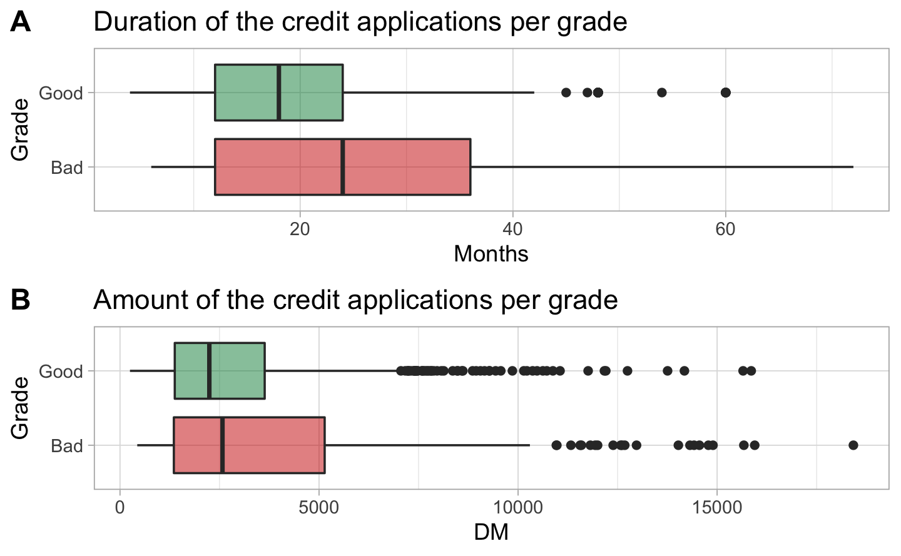
What does the first category means? <0, meaning 0? So the account is opened but there is nothing on it? Another point, if you don’t have any checking account, your credit applications has more probability to be rated as good?
Here again, seems weird. At 3 and 4, it means the previous credit were not or partially reimbursed. But they are graded as good?
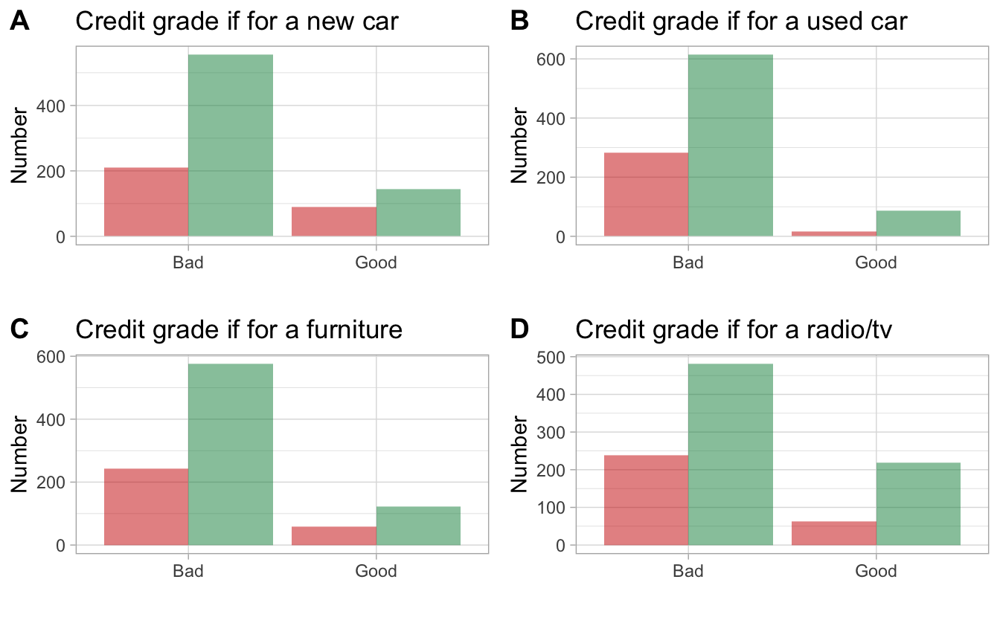

Some questions need to be asked. What’s the difference between an application with a small saving accounts and one with none saving accounts? Why the bank gives good grades to the latest?

#> $`1`
#>
#> $`2`
#>
#> attr(,"class")
#> [1] "list" "ggarrange"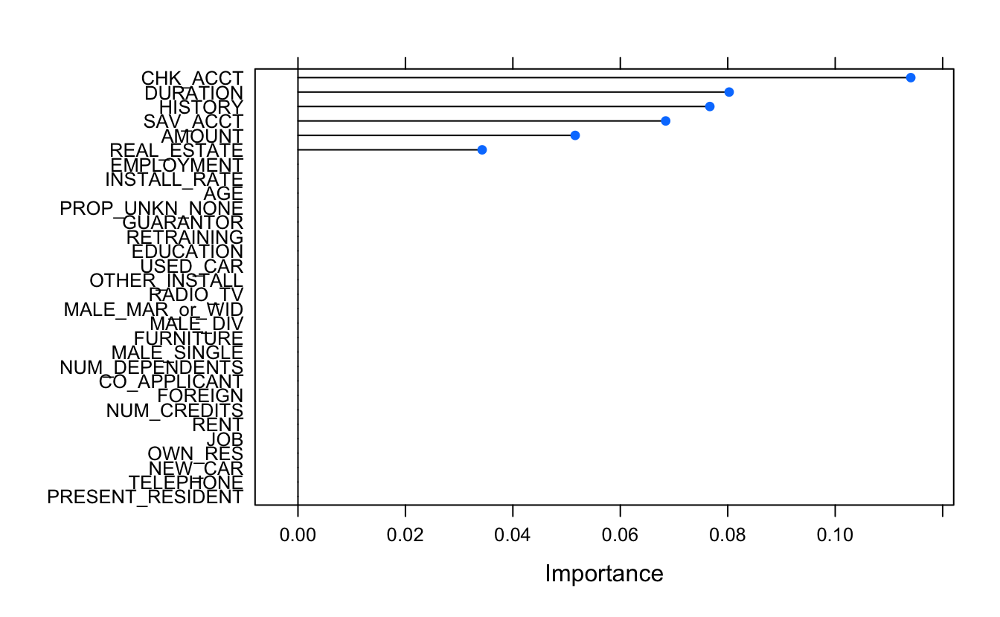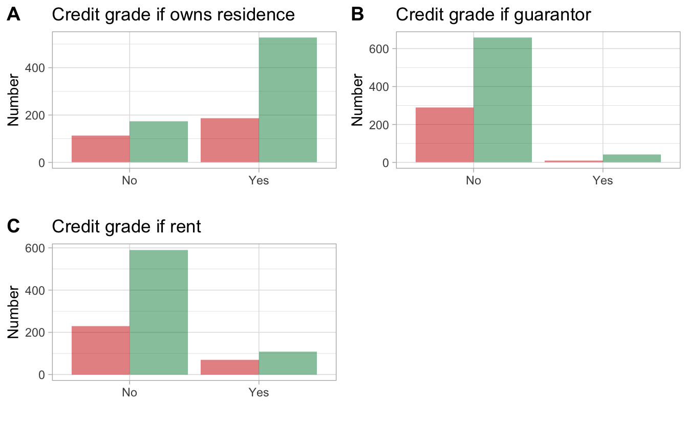


 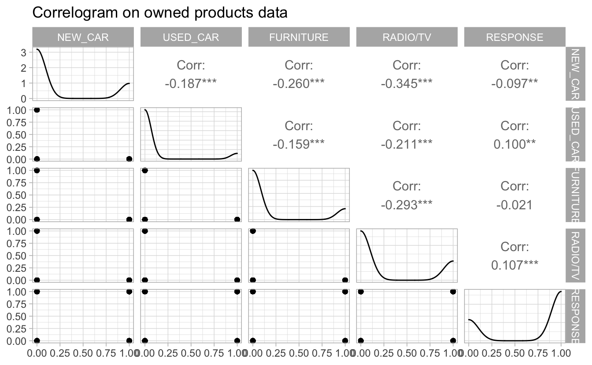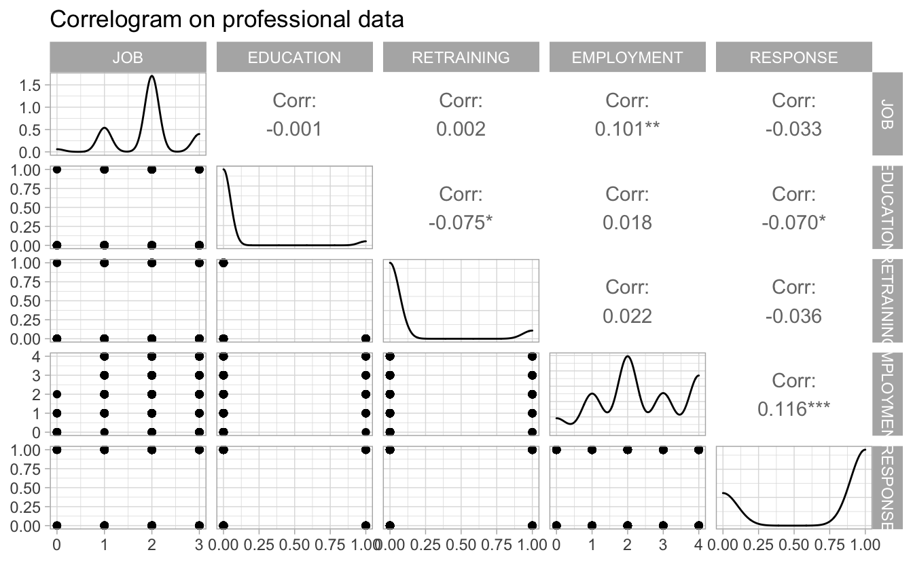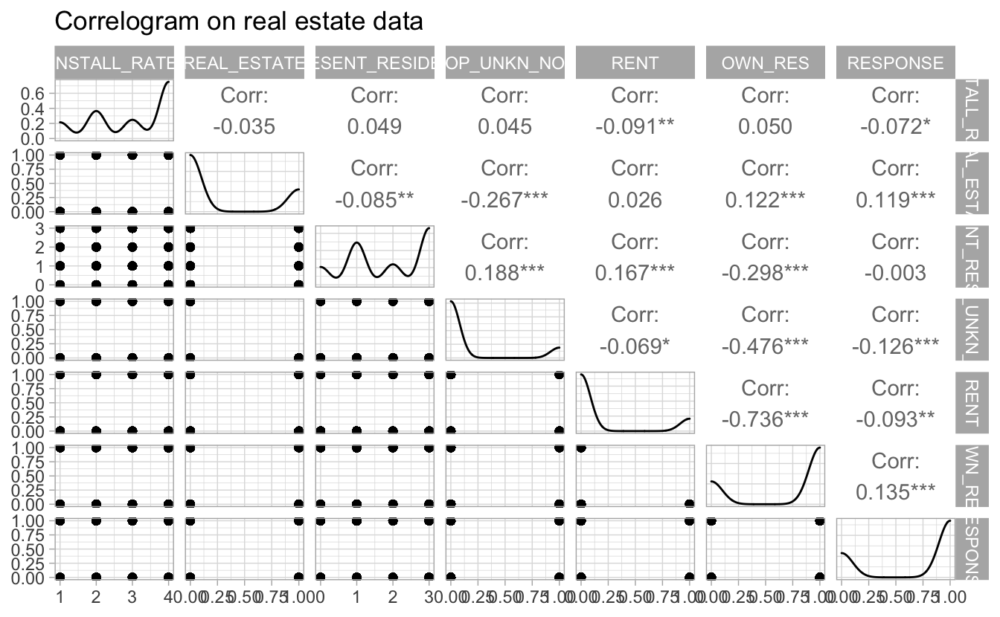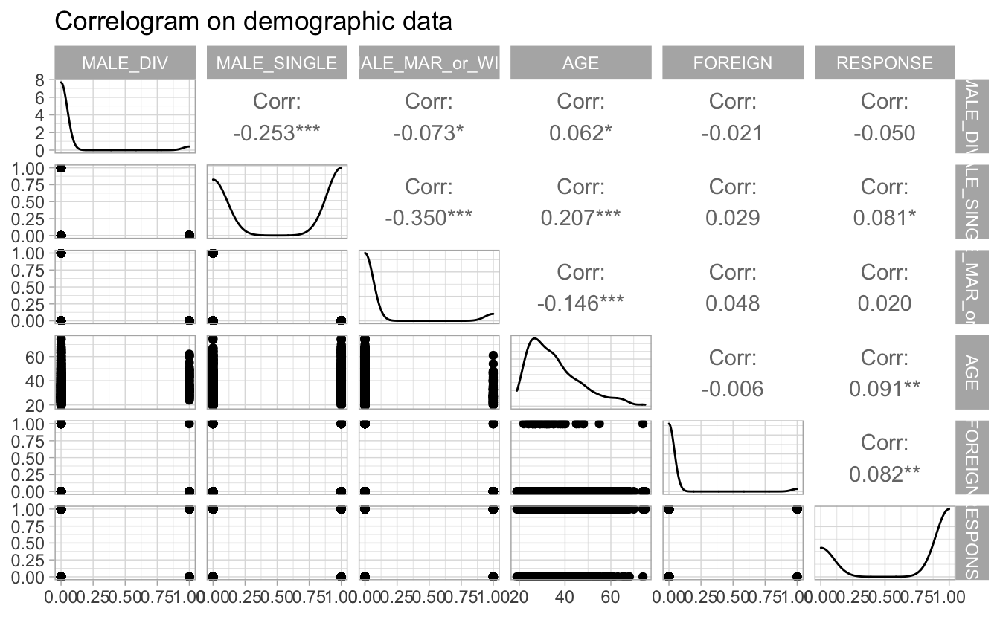
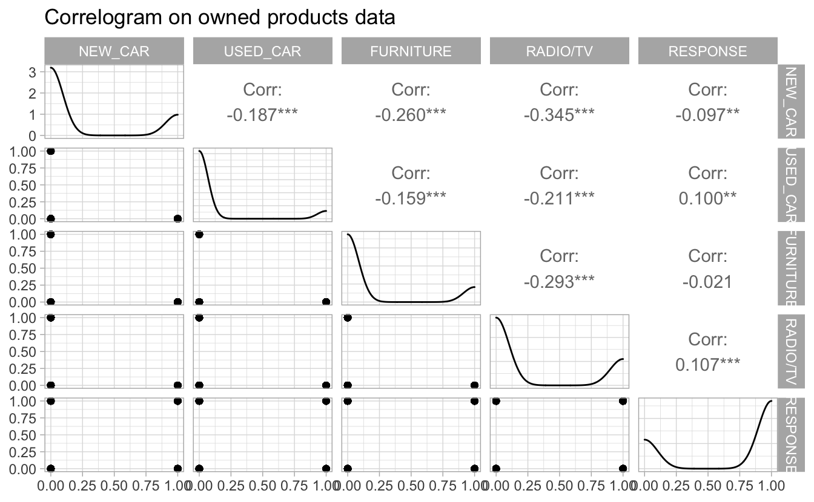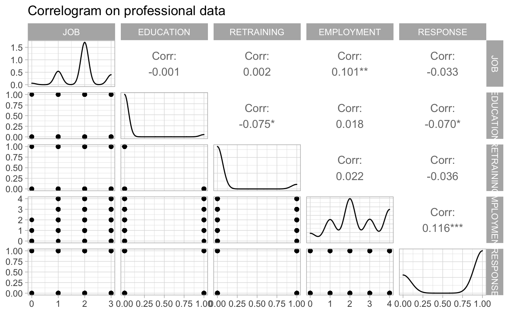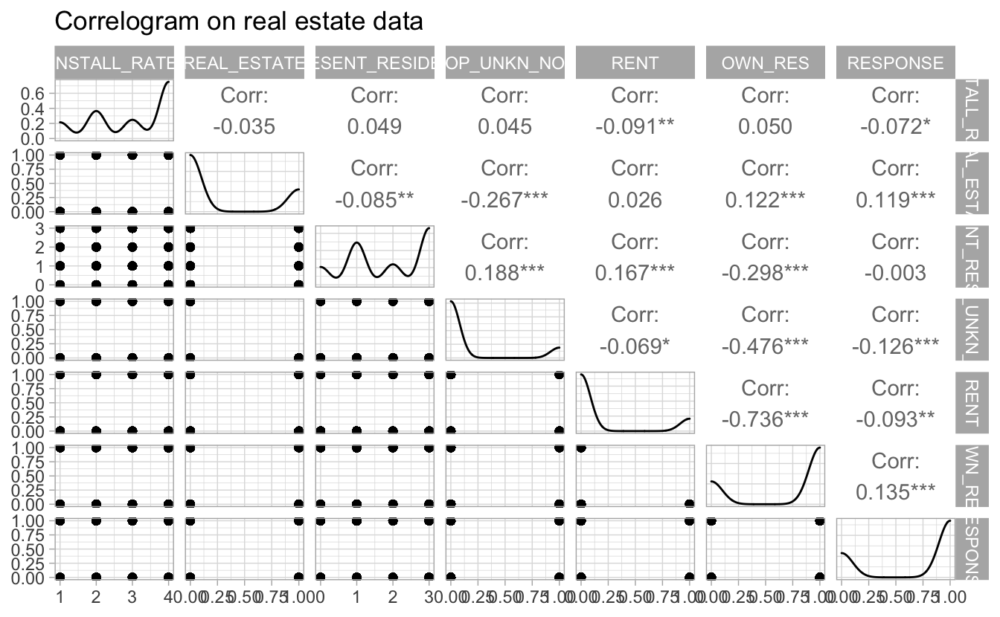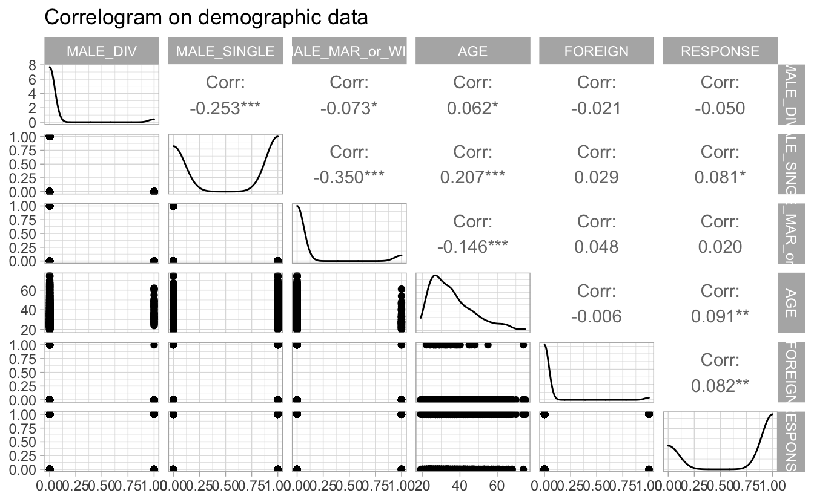

The following plot shows a selection of the most important variables of our dataframe. The two main disadvantages of these methods are: The increasing overfitting risk when the number of observations is insufficient. The significant computation time when the number of variables is large.
#> Warning in train.default(x, y, weights = w, ...): You are trying to
#> do regression and your outcome only has two possible values Are you
#> trying to do classification? If so, use a 2 level factor as your
#> outcome column.
#> Warning in nominalTrainWorkflow(x = x, y = y, wts = weights, info
#> = trainInfo, : There were missing values in resampled performance
#> measures.
#> rpart variable importance
#>
#> only 20 most important variables shown (out of 30)
#>
#> Overall
#> CHK_ACCT 0.1141
#> DURATION 0.0803
#> HISTORY 0.0767
#> SAV_ACCT 0.0684
#> AMOUNT 0.0516
#> REAL_ESTATE 0.0343
#> JOB 0.0000
#> MALE_MAR_or_WID 0.0000
#> PRESENT_RESIDENT 0.0000
#> TELEPHONE 0.0000
#> RETRAINING 0.0000
#> USED_CAR 0.0000
#> FURNITURE 0.0000
#> AGE 0.0000
#> OTHER_INSTALL 0.0000
#> GUARANTOR 0.0000
#> FOREIGN 0.0000
#> RADIO.TV 0.0000
#> OWN_RES 0.0000
#> NEW_CAR 0.0000